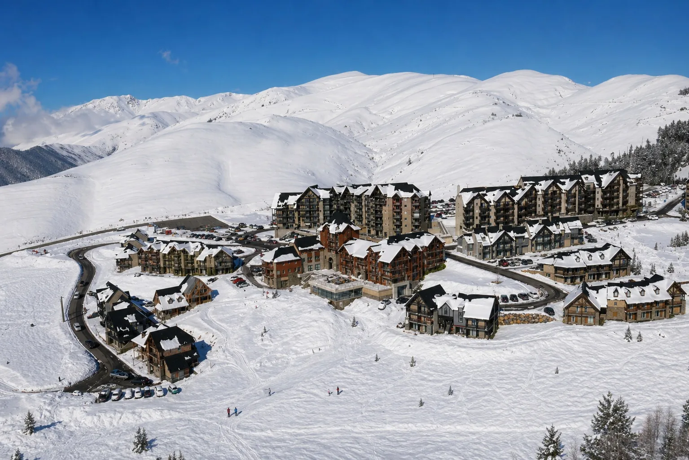

🚡
Skyvall, lien station-vallée
La télécabine Skyvall relie Loudenvielle à Peyragudes en moins de 10 minutes, ce qui renforce la lecture station + vallée du séjour. Source
À Peyragudes, la valeur d’un bien ne repose pas seulement sur sa présence en ligne. Elle dépend de la façon dont le voyageur comprend la station, le versant, l’accès aux pistes, le stationnement, la vue, le confort, Skyvall, Loudenvielle et les usages quatre saisons.

Ces données ne servent pas à promettre un résultat. Elles permettent de comprendre pourquoi un bien à Peyragudes doit être présenté comme un actif de station, connecté à une vallée vivante et à des usages hiver comme été.
La télécabine Skyvall relie Loudenvielle à Peyragudes en moins de 10 minutes, ce qui renforce la lecture station + vallée du séjour. Source
Le dossier hiver 2025-2026 annonce notamment 392 000 journées skieurs et piétons, 12,6 M€ de chiffre d’affaires TTC et 10 262 lits disponibles. Source
Le Bike Park de Peyragudes s’inscrit dans l’espace VTT et cyclosport de la vallée du Louron, avec des circuits balisés et des usages variés. Source
L’INSEE indique une hausse de fréquentation estivale en Occitanie en 2025 et une progression de 4,2 % dans les Pyrénées. Source
La lecture de Peyragudes doit intégrer le lien avec Loudenvielle, le Skyvall, le lac, Balnéa et les séjours quatre saisons.
Peyresourde, Agudes, Balestas, pied de pistes, parking et résidence ne racontent pas la même expérience voyageur.
Le voyageur ne cherche pas seulement “un appartement à la montagne”. Il veut comprendre s’il est proche des pistes, s’il peut se garer, rejoindre Skyvall, descendre à Loudenvielle, profiter de la vue, partir en VTT ou réserver un séjour confortable sans friction.
Une bonne présentation ne doit pas vendre “Peyragudes” de manière vague. Elle doit aider le voyageur à se projeter précisément : où se situe le bien, comment on y arrive, ce qu’il permet de faire et pourquoi il mérite d’être choisi.
La proximité réelle des pistes, des remontées, des écoles de ski et des services doit être claire, sans approximation.
Parking, accès routier, ascenseur, casier utile, cheminement et simplicité d’arrivée sont des éléments très concrets pour les voyageurs.
Quand le bien permet de profiter à la fois de la station, du lac, de Balnéa et de la vallée, cette connexion doit être expliquée simplement.
Peyragudes peut aussi se travailler hors hiver : VTT, randonnée, air frais, événements, courts séjours et activités vallée.
La vue, l’exposition, le balcon, l’accès ascenseur, les rangements et le confort intérieur peuvent modifier fortement la perception du bien.
Peyragudes se travaille aussi hors hiver : VTT, vélo, randonnée, Skyvall, activités vallée et séjours sportifs doivent être visibles.
Sur une station comme Peyragudes, les annonces se ressemblent vite. Le propriétaire doit donc transformer les caractéristiques réelles du bien en arguments visibles : emplacement, confort, vue, accès, équipements, photos, preuve et parcours de réservation.
Sur les plateformes, le voyageur compare vite. Titre, visuels, emplacement, légende, description et page directe doivent aider le bien à être compris immédiatement.
Un bien à Peyragudes vend aussi un contexte : altitude, neige, résidences, pistes, accès, vue, stationnement, vallée et activités.
Photo, vidéo, drone et 360 peuvent renforcer la confiance lorsque le logement, la vue, les volumes et l’environnement sont difficiles à comprendre avec quelques images classiques.
Le direct fonctionne mieux lorsqu’il s’appuie sur une page claire, des informations pratiques, des visuels cohérents et une redirection ou un moteur maîtrisé.
Airbnb, Booking, Abritel, site direct, calendriers, prix, messages et règles saisonnières doivent éviter les incohérences qui font perdre des réservations.
Prix moyen, commissions OTA, part du direct, périodes fortes, trous de planning et frais fixes doivent être analysés ensemble pour piloter plus clairement.
La station combine plusieurs lectures : les résidences en altitude, les versants Peyresourde et Agudes, l’accès vallée par Skyvall, les séjours ski, le VTT, la randonnée, Loudenvielle, Balnéa et la vallée du Louron. Pour un propriétaire, l’enjeu est de rendre cette promesse lisible sans noyer le voyageur dans une présentation générique.
Peyragudes attire des voyageurs qui cherchent une expérience station : neige, accès pistes, résidences, vue, stationnement, confort et praticité.
Skyvall relie Loudenvielle à Peyragudes en moins de 10 minutes. C’est un vrai levier pour articuler station, lac, Balnéa, VTT et séjours quatre saisons.
Un bien côté Peyresourde, Agudes ou Balestas ne raconte pas exactement la même expérience : accès, vue, calme, proximité remontées et usages doivent être précisés.
L’objectif est de relier Peyragudes aux destinations voisines les plus pertinentes, tout en guidant le propriétaire vers les bons leviers : visibilité locale, canal direct, outils et cadre opérationnel.
Replacer Peyragudes dans la stratégie globale des destinations ski, montagne, VTT, vallée et quatre saisons du département.
Lire la page 65Relier Peyragudes à Loudenvielle, au Skyvall, au lac, à Balnéa, aux services de vallée et aux séjours quatre saisons.
Voir LoudenvielleConnecter Peyragudes à la station familiale du Louron, aux séjours neige douce, aux familles et à une lecture montagne accessible.
Voir Val LouronComparer Peyragudes avec la vallée d’Aure : village, thermalisme, station, services, familles et séjours montagne.
Voir Saint-LaryRelier Peyragudes à une autre station d’altitude forte, avec neige, haute montagne, ski et logique de destination hiver.
Voir Piau-EngalyVoir comment un bien peut être mieux compris par Google, les voyageurs et les moteurs IA.
Lire le guide SEO/GEOStructurer un canal complémentaire aux OTA, sans confusion ni promesse excessive.
Lire le guide directSynchroniser calendriers, canaux, prix et messages sans perdre en clarté opérationnelle.
Lire le guide outilsComprendre le périmètre d’intervention LocPilot et les responsabilités qui restent côté propriétaire.
Lire la FAQOui. Peyragudes fait partie des localités prioritaires de LocPilot dans les Hautes-Pyrénées. L’accompagnement porte sur la visibilité locale, la présentation du bien, le canal direct, les outils et la lecture de rentabilité.
Oui. Peyragudes porte une promesse plus station d’altitude, accès pistes, appartements, neige, Skyvall, VTT et expérience sportive. Loudenvielle raconte davantage la vallée, le lac, Balnéa et le bien-être, tandis que Val Louron est plus familial et rassurant.
Les éléments prioritaires sont l’accès aux pistes, le versant Peyresourde ou Agudes, le stationnement, la vue, les couchages, le confort, le balcon ou la terrasse, la distance réelle aux remontées, l’accès Skyvall, la qualité visuelle et la cohérence entre annonce, site et canal direct.
Oui, s’il reste complémentaire aux plateformes et s’il inspire confiance. Une page claire, des visuels cohérents, des informations pratiques, une redirection fiable ou un moteur de réservation maîtrisé peuvent réduire la dépendance à un seul canal.
Oui si l’accès Skyvall est réellement utile pour le voyageur. Il permet de relier Loudenvielle à Peyragudes rapidement et renforce la lecture quatre saisons du bien, notamment pour les séjours ski, VTT, randonnée, Balnéa et vallée du Louron.
Non. LocPilot ne garantit ni les réservations, ni la position Google, ni la validation d’une fiche. L’accompagnement vise à rendre le bien plus lisible, mieux structuré et mieux connecté à ses bons canaux, avec un propriétaire qui reste décisionnaire.
Faisons un premier point sur votre emplacement, vos visuels, vos annonces, vos canaux et les leviers les plus pertinents à clarifier pour améliorer la visibilité et réduire la dépendance aux plateformes.